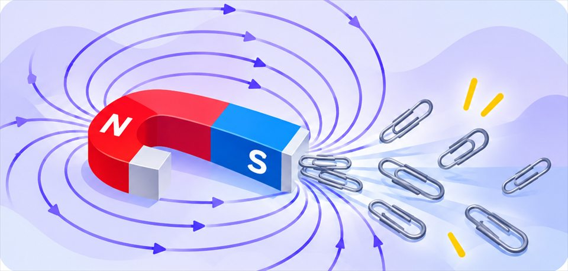

The big idea driving this unit
Magnets push or pull on each other and on iron without touching, through invisible fields that weaken with distance. Electric current in a coil of wire makes a magnetic field you can switch on and off, and moving a magnet near a coil makes current.
Chapters in this unit
-
1

MagnetismHow can a magnet pull a paperclip up through a sheet of paper, and why does a compass needle point toward magnetic north anywhere on Earth?MS-PS2-3MS-PS2-5MS-PS3-2 - 2 Electromagnetic FieldsHow can a giant crane at a junkyard lift an entire car with a magnet one second, then drop it exactly where it wants a moment later?MS-PS2-3MS-PS2-5